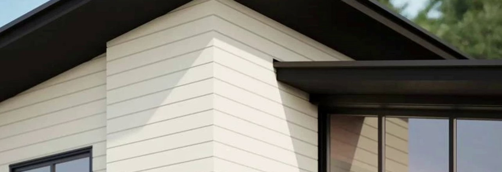

Fiber Cement Siding Installers
In Greater HoustonFiber cement gives Houston homes a durable, substantial exterior that stands up to heat, humidity, storms and termites, with flexible design choices. We handle fiber cement repair and full replacement. Get your free fiber cement siding estimate today!
Get A Siding EstimateFiber Cement Siding Repair In Greater Houston
Cracked boards, isolated impact damage, damaged trim or localized moisture problems can often be repaired without replacing your whole exterior. We evaluate the affected area and the surrounding siding before recommending a targeted repair or a broader replacement.
Fiber Cement Siding Replacement In Greater Houston
When damage is widespread, the finish is worn across multiple walls, or you want a full material and style update, we plan a complete replacement. We help you compare profiles and finishes, then install the new siding with careful attention to joints, trim, clearances and transitions.

Fiber Cement Siding Styles
Benefits Of Fiber Cement Siding
Fiber Cement Siding Financing In Greater Houston
Fiber cement can be a larger exterior investment, and financing gives you another way to plan the project cost. We offer flexible financing options with terms based on qualification.
How Much Does Fiber Cement Siding Cost In Greater Houston?
A full fiber cement siding replacement on an average-sized Greater Houston home typically costs $27,000 – $67,500, depending on home size, stories and the profile you choose. Use our siding cost calculator for an instant estimate.
Siding Financing